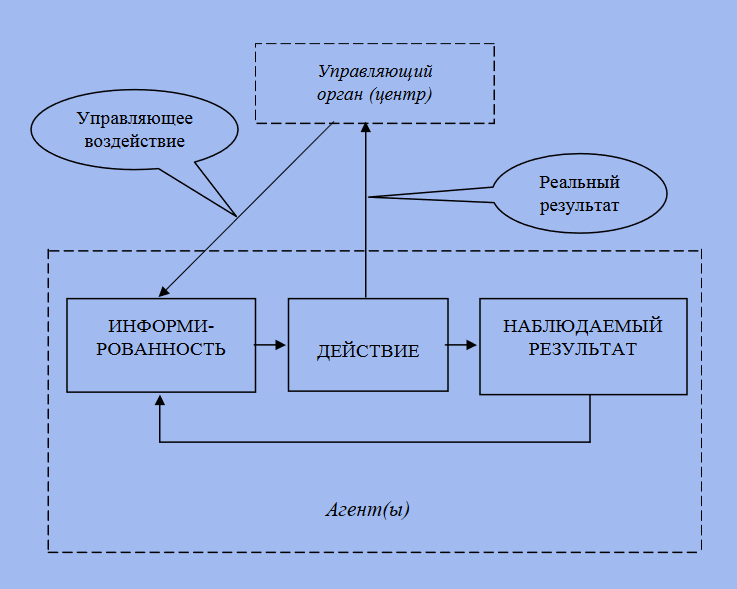
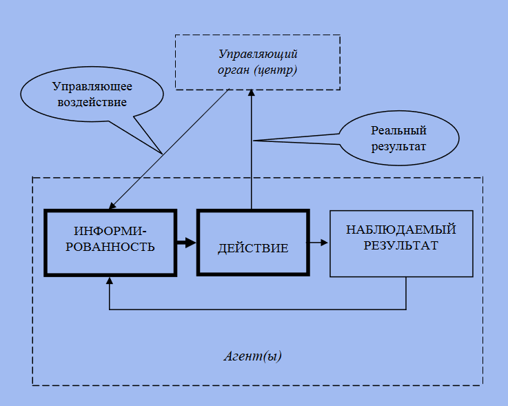

Цель данной работы заключается в исследовании и анализе теоретико-игровых моделей в информационных системах с целью оптимизации процессов принятия решений, повышения эффективности и надежности информационных систем, а также решения задач сетевой безопасности и киберзащиты.
1. Изучить основные принципы и концепции теории игр и их применимость к информационным системам.
2. Провести анализ существующих исследований по применению теории игр в информационных системах.
3. Исследовать влияние стратегий игроков на эффективность работы информационной системы.
4. Исследовать возможности оптимизации процессов безопасности информационных систем с использованием теоретико-игровых моделей.
5. Оценить эффективность и применимость теоретико-игровых моделей в информационных системах и сформулировать рекомендации по их использованию.
В настоящее время общество переживает период активного проникновения информационных технологий во все сферы жизнедеятельности, бурно развивается информационное общество и цифровая экономика (digital economy). Цифровая экономика базируется на цифровых компьютерных технологиях, её продукты находят применение в разнообразных отраслях реального производства товаров и услуг. Сейчас распространено определение цифровой экономики как экономики данных. Однако памятуя определение Н. Вирта, что программирование – это алгоритм и структура данных, имеет смысл говорить о цифровой экономике как об экономике алгоритмов и данных. Вслед за этим, мы обращаемся к понятию математического моделирования.
С теоретико-игровой точки зрения задача управления состоит в том, чтобы создать для управляемых субъектов (агентов) игру с такими правилами, чтобы исход игры был как можно более благоприятным для управляющего органа (центра). Центр является как бы метаигроком, он делает первый ход, формируя правила игры для агентов. После этого агенты выбирают свою стратегию поведения тем или иным образом, с учетом выбора центра.

Для описания информированности агента вводится понятие структуры информированности, включающей в себя иерархию представлений о неопределенном параметре, а также о представлениях оппонентов, представлений о представлениях и т. д. Игра, в которой игроки принимают решение на основе своих структур информированности, называется рефлексивной игрой.

Неопределенность - это недостаточность обеспеченности процесса принятия управленческих решений необходимой информацией или, в более общей трактовке, знаниями о проблемной ситуации. Неопределенность влияет на эффективность принимаемых управленческих решений и в целом на эффективность экономической деятельности.
Одной из концепций теоретико-игрового моделирования принятия решений в экономике, позволяющей учитывать указанные особенности социально-экономических систем, является концепция комбинированного применения статистических и антагонистических игр. Суть концепции комбинированного применения статистических и антагонистических игр заключается в отождествлении исходной статистической игры, моделирующей принятие управленческих решений.
Пусть ситуация принятия инвестиционных решений характеризуется следующими составными частями:
1. I = {1; 2; 3; 4} – известное множество потенциальных проектов, возможность инвестирования которых рассматривает инвестор;
2. J = {1; 2; 3; 4; 5} – известное множество сценариев условий реализации потенциальных проектов, возможность инвестирования которых рассматривает инвестор;
3. μ = μ4×5 = (μij ) – частично известная матрица, элементы которой μij задают соответствующие значения оценок функции принадлежности i-го проекта множеству наиболее надежных проектов в условиях j-го сценария
Данную игровую модель можно интерпретировать и как статистическую игру, и как антагонистическую игру, заданную платёжной матрицей, значения элементов которой вычисляются инвестором на основании найденных им значений показателей оценки экономической эффективности данных потенциальных проектов в условиях реализации соответствующего сценария.
Можно выделить два подхода к моделированию игровых задач наилучшего выбора. В первом подходе игроки наблюдают за одной и той же последовательностью предложений x1, x2, . . . , xn, из которой они хотят выбрать наибольшее из предложений либо предложение сo значением большим, чем у других игроков. Во втором подходе у каждого из игроков собственная последовательность наблюдений.
Предположим, что n = 2, т.е. в конкурсе на должность участвуют два претендента. На первом шаге первый эксперт получает наблюдение x1. Его стратегию выбора опишем с помощью порогового значения u. Если x1 > u, то он выбирает первого конкурсанта и выходит из игры. В противном случае данного конкурсанта вынужден выбрать второй эксперт, и тогда первый эксперт выбирает второго конкурсанта. Значение игры Γ2 зависит от пороговой стратегии игрока, имеющего преимущество при выборе, в данном случае от пороговой стратегии первого эксперта.
Пусть в игре участвуют два конкурсанта, т.е. n = 2. На первом шаге эксперты одновременно наблюдают параметр x1 первого конкурсанта. Стратегию выбора обоих экспертов опишем с помощью пороговых значений u и v для первого и второго экспертов соответственно. Если x1 > u, то первый эксперт выбирает первого конкурсанта и выходит из игры. Аналогично действует и второй эксперт, т.е. при x1 > v он выбирает конкурсанта и выходит из игры. Предположим, что u > v. Тогда конкурсанта с параметром качества x1 < v отвергнут оба эксперта, с параметром качества v 6 x1 < u примет только второй экперт, если же x1 > u, предложение конкурсанту сдела- ют оба эксперта, после чего конкурсант с одинаковой вероятно- стью выбирает одного из них.
1. https://mlsd2019.ipu.ru/proceedings_1/97-107.pdf Ерешко Ф.И., Гасанов И.И., Горелов М.А.Теоретико-игровые модели цифровых платформ, 2019 – 11с.
2. https://www.mathnet.ru/links/0bfadfc73f566b3936de01ee4246ea82/ubs186.pdf Чхартишвили А. Г. Теоретико-игровое моделирование информационного управления, 2006 – 6с.
3. http://www.mtas.ru/upload/iblock/41a/ChhartishviliAG-dfmn.pdf Чхартишвили А. Г. Теоретико-игровые модели информационного управления в активных системах, 2005 – 48с.
4. https://cyberleninka.ru/article/n/teoretiko-igrovoe-modelirovanie-prinyatiya-resheniy-v-ekonomike-pri-nepolnoy-informatsii Сигал А.В. Теоретико-игровое моделирование принятия решений в экономике при неполной информации, 2017 – 14с.
5. https://cyberleninka.ru/article/n/model-nailuchshego-vybora-s-nepolnoy-informatsiey/viewer Коновальчикова Е.Н. Модель наилучшего выбора с неполной информацией, 2015 – 20с.
6. https://cyberleninka.ru/article/n/teoretiko-igrovaya-model-prinyatiya-investitsionnyh-resheniy Сигал А.В. Теоретико-игровая модель принятия инвестиционных решений, 2011 – 13с.
7. Мазалов В.В. Математическая теория игр и приложения. – Санкт-Петербург–Москва–Краснодар: Изд-во «Лань», 2010. – 446 с.
8. Бурков В.Н., Новиков Д.А. Теория активных систем: состояние и перспективы. М.: СИНТЕГ, 1999.
9. Нейман Дж. фон, Моргенштерн О. Теория игр и экономическое поведение. М.: Наука, 1970.
10. Бурков В.Н., Ириков В.А. Модели и методы управления организационными системами. М.: Наука, 1994. – 272 с.
Теоретико-игровые модели играют важную роль в различных областях науки и практики, позволяя анализировать стратегии принятия решений и их последствия в различных ситуациях. Они помогают предсказывать результаты конфликтов, оптимизировать процессы принятия решений и разрабатывать эффективные стратегии поведения. Использование теоретико-игровых моделей позволяет получить глубокое понимание механизмов взаимодействия и улучшать качество принимаемых решений. В результате исследований с использованием теоретико-игровых моделей можно выявить оптимальные стратегии действий и достичь желаемых результатов.